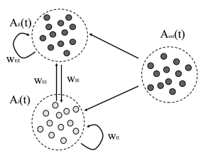
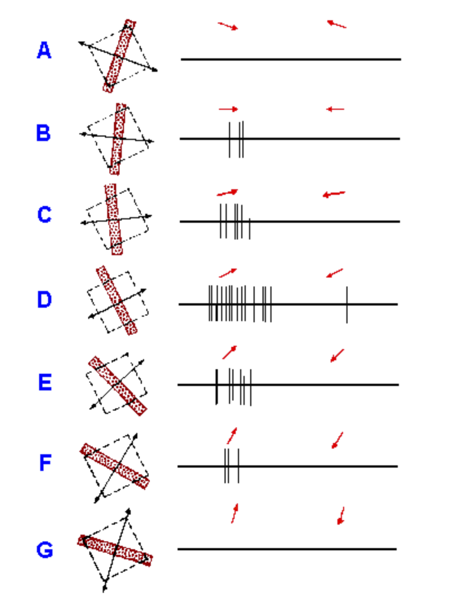
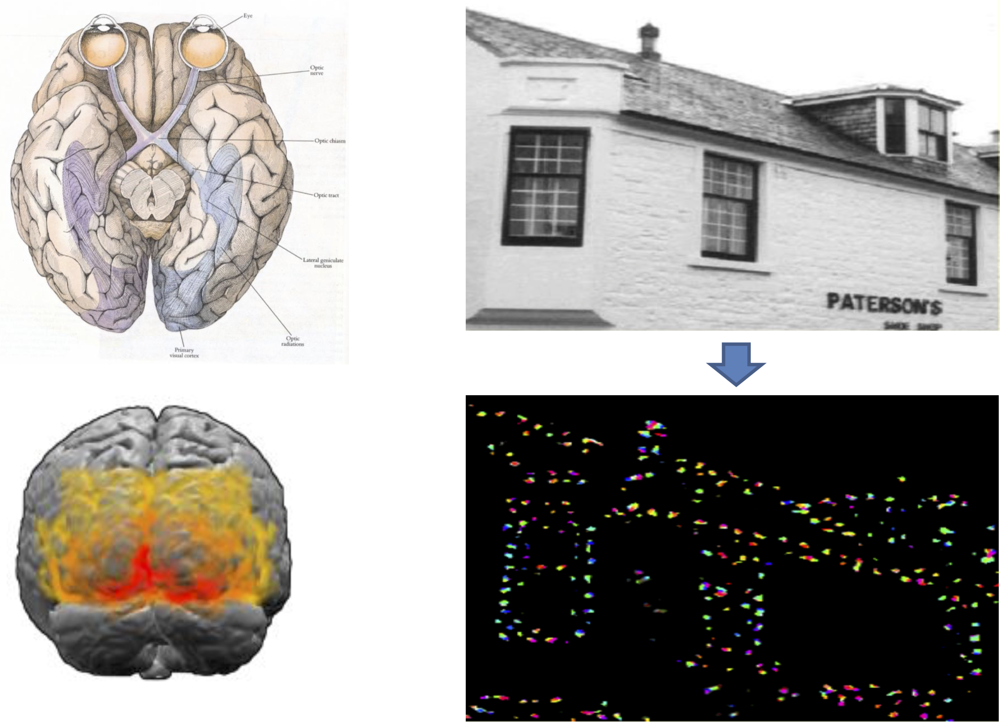

Brain-inspired computing seminar
Overview of seminar topics
Prof. Karl-Heinz Meier / Johannes Bill / Mihai Petrovici
Formalities
- Mondays 16:15 h – 17:45 h
- 12 Sessions
- First talk on 02.05.2016
- 60 min talk + 30 min questions
- grade is 1/3 form, 1/3 content and 1/3 transcript
- I will provide you with material and we will discuss the content of the talk.
- You will give a real-time test talk and I will give feedback at the end.
Spatial structure of neurons & multicompartment models
Recurrent population models
Dynamics of sparsely connected networks of excitatory and and inhibitory spiking neurons (Brunel 2000)
Fokker Planck equation
Coding and decoding
- Discrimination
- Population Decoding
- Spike train decoding
Encoding of orientation
Visual receptive fields

Reservoir computing
- Essentially study of large dynamical system formed from simple components with random connections.
- In particular applicable to the case where the components are simple point neuron models.
- Readout is trained by some classical method (for example linear regression).
Anatomy of the Brain

- layer structure
- interneurons
- winner take all subnetworks
- topographical maps
- sensory processing
Self-Organizing Maps
Neural Sampling + LIF Sampling
Deep learning
Spike-based Expectation Maximization
- Use spike time dependent plasticity to generate a probabilistic model of the input data